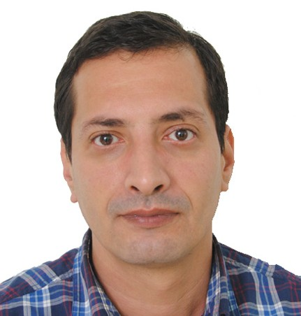

nolondil@gmail.com
mobile: 0557 435 213
Date de naissance: 10 octobre 1975
Adresse: 22 rue Mouzaoui Abdelaziz, Alger
# BOUSMINA Lazhar
(Administrateur système)
## Compétences Techniques
### Windows
* Mise en place, administration et maintenance d’une infrastructure Active Directory dans des environnements Windows Server (2008 à 2025)
+ Mise en place d’un serveur de deploiement Windows
* Gestion des Contrôleur de domaine, Serveurs
* Configuration d’un cluster de basculement Windows
### Virtualisation:
* Installation et configuration d’un hyperviseur: Hyper-V, vSphere Vcenter et Proxmox.
* Configuration du stockage réseau de type NAS et SAN.
### Linux:
* Installation, administration des serveurs Linux : Redhat et Debian
### Réseaux
* Configuration des réseaux LAN, WAN.
* Configuration et dépannage des protocoles réseaux.
* Configuration routeurs et switches L2 et L3.
* Configuration et administration des pare-feux.
## Expérience professionnelle:
#### SOGRAL EPE/SPA (Chef de projet sécurité informatique, 03/2023 à ce jour)
* Gestion des sauvegardes des serveurs avec VEEAM Backup and Replication.
* Configuration des pares-feu FORTIGATE.
* Configuration et administration des serveurs web et proxy.
* Installation et configuration de la solution anti-virus ESET Endpoint Security.
* Installation et configuration d’une baie de stockage HPE MSA2062.
#### SOGRAL EPE/SPA (Administrateur système & réseaux, 10/2018 à 03/2023)
* Administration du domaine Windows Server : active directory, GPO.
* Administration de l’hyperviseur vCenter / ESXI et des machines virtuelles.
* Mise en place d’un serveur FTP : ProFTPD
* Mise en place d’une plateforme de monitoring et d’alerting : Zabbix.
* Mise en place d’un serveur centralisé des logs : Graylog.
* Mis en place d’un serveur de ticketing/IT Assets Management : GLPI
* Formation des nouveaux recrues
* IT support niveau 2.
#### ZETA TECHNOLOGIES (Informaticien réseau et système, 06/2013 à 09/2015)
* Installation réseau et configuration serveurs et postes clients.
* Gestion des serveurs : ILO, iDRAC, Firmware, disques et contrôleur Raid...
* Configuration des équipements réseau : switch L2/L3, routeurs et pare-feux.
#### INSFP Beaulieu (Agent administratif, 01/2007 à 12/2012)
## Projets
* Mise en place d'une plateforme d'hébéregement de fichiers et collaboration (Nextcloud)
* Implémentation d’un serveur de ticketing et d’inventaire d'équipements IT (GLPI)
* Déploiement d’un serveur de monitoring de l’infrastruction IT (Zabbix + Grafana)
* Mise en place d’un serveur centralisé de collecte et d’analyse des logs des équipements réseau et des serveurs (Graylog)
* Configuration et administration d’une solution de sauvegarde des serveurs et VMs (Veeam Backup & replication)
* Mise en place d’un reverse proxy en mode terminaison TLS (HAProxy)
* Installation et administration d’une plateforme de réservation en ligne (MAHATATI)
* Configuration d'un cluster de serveurs de virtualisation (vCenter)
## Diplômes et formations
* Formation RSSI : Maîtriser et incarner les fonctions SSI, UNIDEES (05/2023)
* CompTIA Storage+ (12/2021)
* CompTIA Security+ SYO-501 (12/2020)
* Certification Cisco CCNA 200-301 (01/2020)
* Crash course CCNA (12/2019)
* VMware vSphere : Install, Configure, Manage V6.7 (12/2019)
* Implémentation d’une infrastructure de serveur avancé (12/2019)
* FortiGate Infrastructure (03/2019)
* Configuration des services avancés de Windows Server 2012 (11/2018)
* Administration RedHat Entreprise Linux 5 (2009)
* Diplôme TS en informatique, option bases de données (09/2015)
## Misc. Information
* Langues: Anglais (bon), Français (bon), Arabe (bon)
* Disponibilité: 1 mois